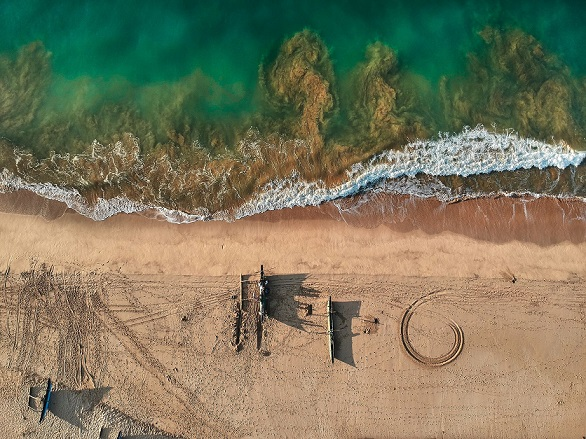

Sri Lanka is an island nation located in the Indian Ocean, just off the southeastern coast of India. Despite its modest size—slightly larger than the state of West Virginia—Sri Lanka has a population of about 20 million people, almost equal to the population of Texas. The island is rich in natural resources, and has a diverse economy based on agriculture, mining, fishing, manufacturing, and tourism. On becoming an independent nation in 1948 Sri Lanka (formerly called Ceylon) seemed to be headed for a future as a stable and prosperous democracy. Since the 1970s, however, the country has been torn by violent struggles between the two main ethnic groups, Sinhalese and Tamils, that make up its population. Sri Lanka suffered severe damage and loss of life from the tsunami of 2004; what effect that disaster will have on the country’s political future remains to be seen.
The Ancient Period About 2600 years ago, migrants from northern India, the ancestors of today’s Sinhalese people, arrived in Sri Lanka. The Sinhalese were among the earliest people outside northern India to adopt the Buddhist religion, which they did around 300 B.C.E. The Buddhist kingdoms of Sri Lanka were related by language and culture to the classic states of northern India, such as the Maurya (324-187 B.C.E.) and Gupta (c. 320-c.550 C.E.) empires, and were in contact with them through diplomacy and trade. The Sri Lankan Buddhist kingdoms flourished by building and controlling irrigation networks on the plains in the northern part of the island. One ancient capital, Anuradhapura, was home to some of the largest and most impressive Buddhist temples of southern Asia. The ruler of another Sri Lankan state, King Kasyapa (r. 473-491) made his capital at Sigiriya, a natural rock fortress rising a sheer 500 feet above the surrounding plain, on top of which the king built an elegant city of palaces and gardens. King Kysapa and other Sri Lankan kings had to deal with occasional invasions from Tamil Nadu, in southern India, which increased in frequency and severity after around 600 C.E. Sri Lanka struggled, not always successfully, to remain independent of the great Chola Empire that dominated southern India from about 850 to 1279 C.E. A Tamil kingdom was established on the Jaffa Peninsula, in the northern part of Sri Lanka, by the early 13 th century. Meanwhile the center of Sinhalese royal power drifted steadily toward the southern and western parts of the island, and the separate Sinhalese kingdom of Kandy rose to power in the central hills. The division of Sri Lanka into a Tamil north and east, and a Sinhalese south, center and west, is thus not a new phenomenon of the 20th century, but a situation that has existed for hundreds of years.